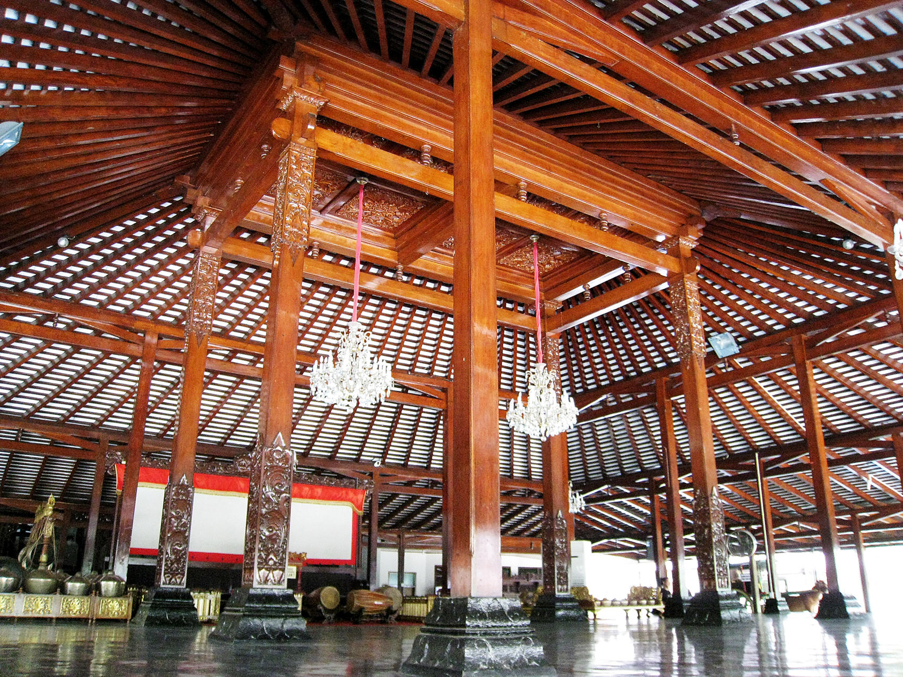
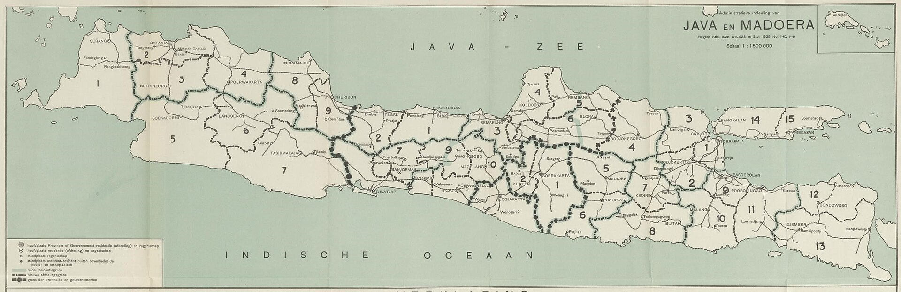

PENDOPO

KENCANA
Rumah perjamuan resmi Nusantara untuk makan malam berurutan dan jamuan privat. Kami meracik rempah utuh, kaldu tulang panggang, serta hasil bumi kepulauan di atas bara kayu asam khusus bagi jumlah tamu yang telah dikonfirmasi.
Silsilah Dapur
Dapur kami berpegang pada naskah boga keraton Jawa dan jalur niaga rempah Maluku. Cengkeh kering, bunga pala, asam kawak, dan kemiri sangrai digiling di atas batu pipisan setiap pagi sebelum tungku kayu dinyalakan.
Tidak ada bumbu dasar yang disimpan melampaui hari perjamuan. Pemanggangan lambat di dalam kuali tanah liat dan bambu menjaga kejernihan kaldu sekaligus mempertahankan aroma asli daun jeruk purut, serai wangi, dan lengkuas muda.
Status Sertifikasi Dapur: [PLACEHOLDER: Nomor Sertifikat Halal / Keterangan Bahan]

Ruang Jamuan Privat
Pilih ruang perjamuan di bawah ini untuk menyesuaikan tata meja, kapasitas kursi, dan draf permohonan reservasi WhatsApp Anda.
Ruang utama berkonstruksi kayu jati lawas dengan tata meja berjarak lega untuk jamuan keluarga besar maupun jamuan kehormatan.
Kapasitas & Ketentuan Meja: [PLACEHOLDER: Kapasitas Kursi & Minimum Spend Pendopo Agung]
Ruang privat tertutup berpanel kayu kedap suara dengan satu meja panjang utuh untuk rapat dewan, penandatanganan kerja sama, atau perjamuan kedutaan.
Kapasitas & Ketentuan Ruang: [PLACEHOLDER: Kapasitas Kursi & Minimum Spend Kamar Rempah]
Serambi semi-terbuka yang menghadap halaman tanaman obat dan kolam batu, cocok untuk jamuan teh sore maupun makan malam di bawah teduh pepohonan.
Kapasitas & Ketentuan Serambi: [PLACEHOLDER: Kapasitas Kursi & Minimum Spend Serambi Taman]
Tata Cara Jamuan
Empat tahapan terukur dari permohonan jadwal melalui WhatsApp hingga penyajian babak penutup di meja perjamuan.
-
Ajukan
Kirimkan tanggal, sesi perjamuan, serta jumlah tamu melalui penyusun pesan WhatsApp kami. Meja reservasi akan memeriksa ketersediaan ruang dalam hari kerja yang sama.
-
Selaraskan
Tentukan susunan hidangan makan tengah atau porsi individu beserta catatan pantangan alergi setiap tamu bersama kepala pelayan kami sebelum hari kedatangan.
-
Racik
Pada pagi hari perjamuan Anda, dapur menggiling rempah segar, menyaring kaldu, dan menyalakan bara kayu asam khusus sesuai jumlah kursi yang telah dikonfirmasi.
-
Jamukan
Tamu disambut dengan seduhan rempah hangat di serambi sebelum memasuki ruang makan untuk menikmati rangkaian hidangan yang disajikan berurutan tanpa tergesa.
Tungku Bara Kayu
Pemanggangan di atas bara kayu dan tempurung kelapa membutuhkan waktu persiapan empat jam sebelum tamu tiba. Karena itu, kami mengutamakan reservasi terjadwal dibandingkan kunjungan langsung tanpa pemberitahuan.
Ketentuan Reservasi
Informasi operasional mengenai batas waktu pemesanan, penyesuaian alergi pangan, tata busana, serta prosedur konfirmasi deposit.
Berapa hari sebelumnya reservasi meja atau ruang privat harus diajukan?
Untuk meja reguler di Pendopo Agung, kami menyarankan pemesanan minimal 24 jam sebelum sesi jamuan. Untuk penggunaan Kamar Rempah atau perjamuan di atas 10 tamu, permohonan jadwal diterima paling lambat tiga hari sebelumnya.
Apakah dapur dapat menyesuaikan hidangan bagi tamu vegetarian atau alergi tertentu?
Ya. Karena kaldu dan bumbu digiling segar setiap pagi, kami dapat menyiapkan kaldu jamur hutan tanpa hasil laut maupun memisahkan penggunaan kacang kenari dan udang apabila dicantumkan pada catatan reservasi WhatsApp.
Bagaimana ketentuan tanda jadi (deposit) dan pembatalan jadwal?
Konfirmasi kursi membutuhkan pembayaran tanda jadi melalui rekening resmi rumah jamuan. Rincian nominal dan batas waktu pengembalian dana ditandai pada [PLACEHOLDER: Kebijakan Deposit & Nomor Rekening Resmi].
Apakah tersedia fasilitas parkir kendaraan dan layanan jemputan di pintu pendopo?
Halaman depan pendopo memiliki jalur penurunan penumpang beratap untuk tamu berkendara maupun tamu kenegaraan. Kapasitas lahan parkir dan layanan valet mengikuti [PLACEHOLDER: Ketentuan Parkir & Valet Lokasi].
Apakah terdapat panduan tata busana bagi tamu yang hadir?
Kami menerapkan tata busana rapi dan sopan (wastra Nusantara, batik berlengan, kemeja tenun, atau busana formal malam). Kami memohon tamu untuk tidak mengenakan sandal jepit atau pakaian olahraga.
Lokasi & Meja Tamu
Seluruh korespondensi reservasi, pengiriman denah lokasi, dan pengaturan menu privat dilayani melalui meja tamu WhatsApp resmi kami.

Kediaman Pendopo
[PLACEHOLDER: Alamat Jalan, Nomor Bangunan, Distrik & Kota]
Tautan titik koordinat peta navigasi: [PLACEHOLDER: Tautan Google Maps Resmi].
Waktu Perjamuan
[PLACEHOLDER: Hari Operasional, Jam Sesi Siang & Jam Sesi Malam]
Pemesanan hidangan terakhir ditutup 45 menit sebelum sesi perjamuan berakhir.